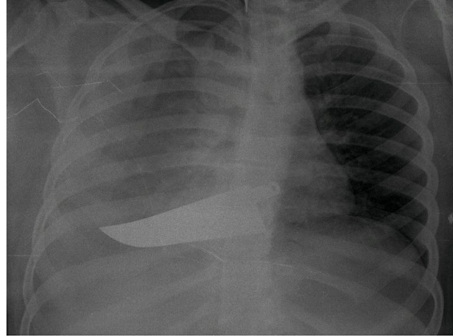
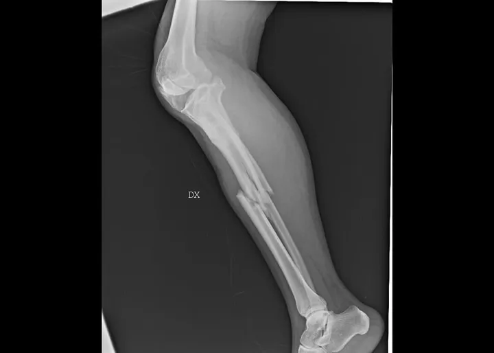
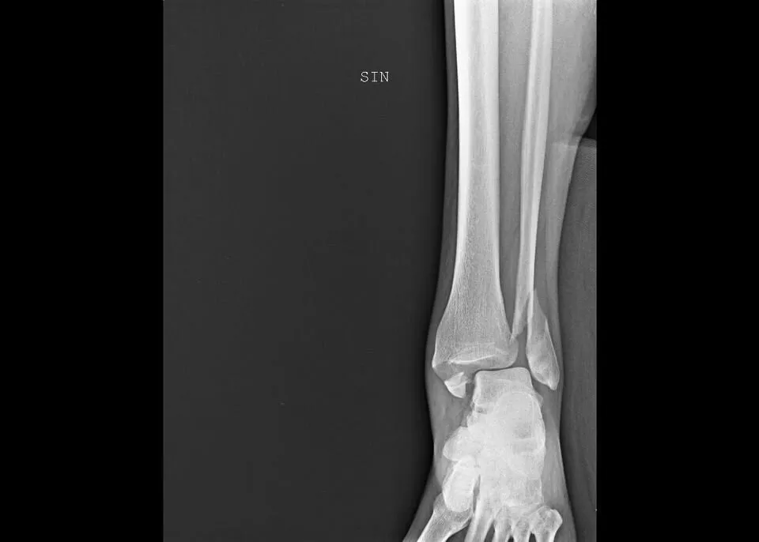
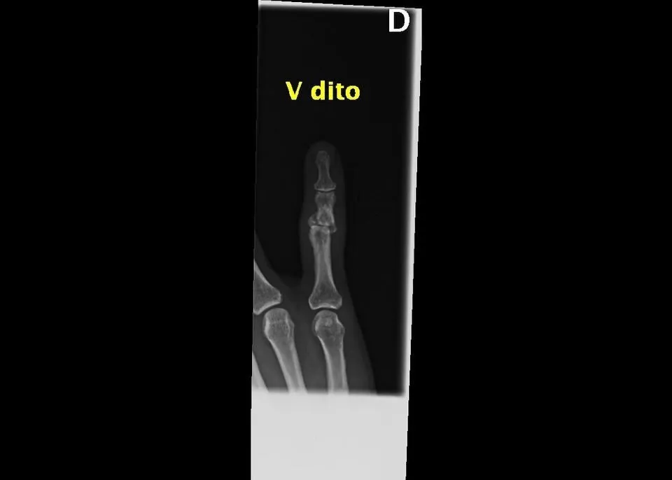
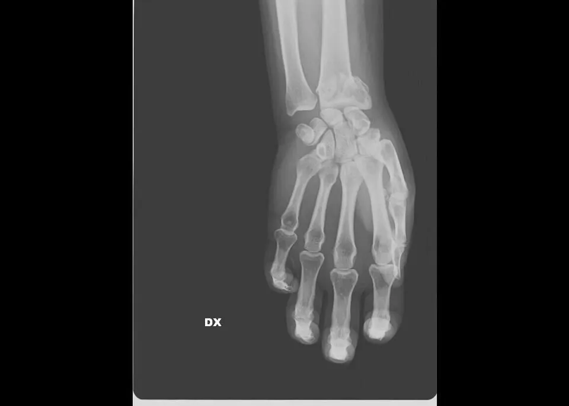
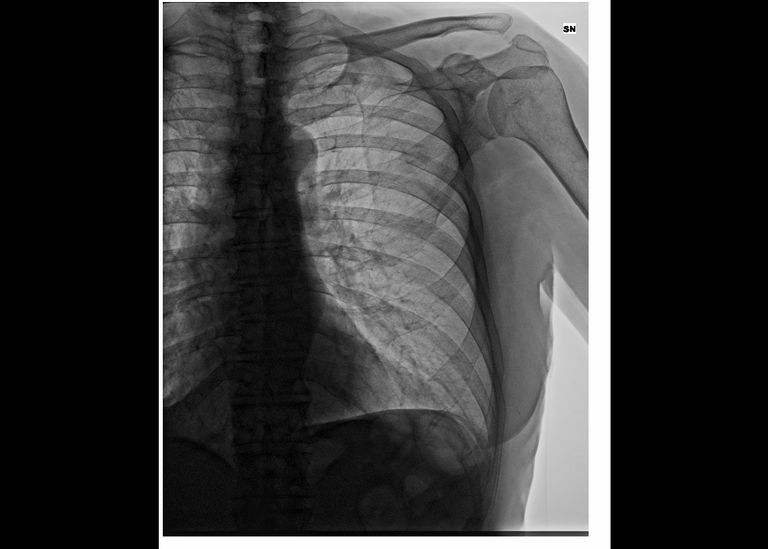
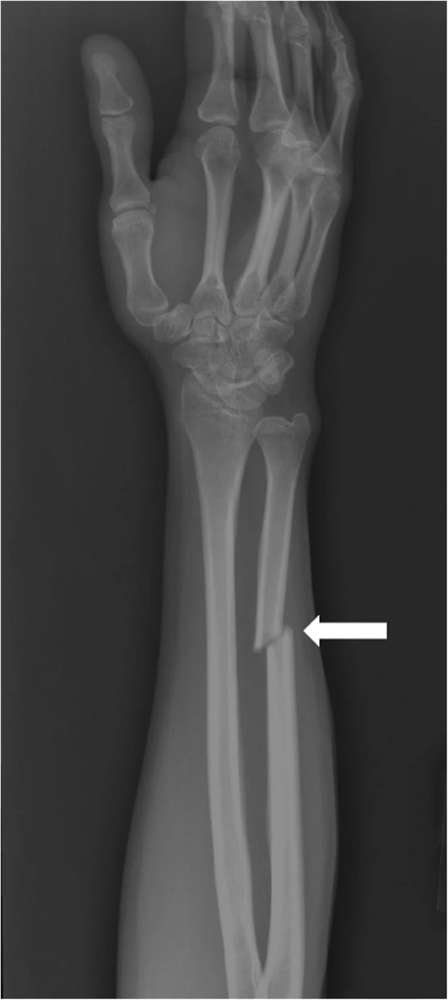

Facts

Globally, even before the COVID-19 pandemic began, 1 in 3 women experienced physical or sexual violence mostly by an intimate partner.

Emerging data shows an increase in calls to domestic violence helplines in many countries since the outbreak of COVID-19.
Sexual harassment and other forms of violence against women continue to occur on streets, in public spaces and online.

In some countries, resources and efforts have been diverted from violence against women response to immediate COVID-19 relief.

One hundred thirty-seven women are killed by a member of their family every day.

By September 2020, 52 countries had integrated prevention and response to violence against women and girls into COVID-19 response plans.

In 2019, one in five women, aged 20–24 years, were married before the age of 18.

At least 200 million women and girls, aged 15–49 years, have undergone female genital mutilation in 31 countries where the practice is concentrated.